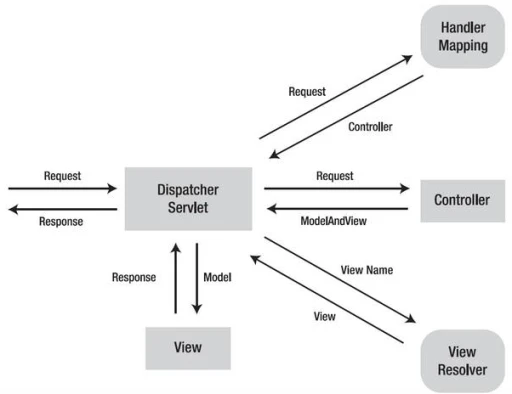

DispatcherServlet - главный контроллер который принимает все сообщения и отправляет их выдирая из @RequestMapping.
Spring MVC зависимости(spring-webmvc) - содержит в себе зависимости:
ExceptionHandler - для обрабатывать исключения на уровне отдельного контроллера.
HandlerExceptionResolver - является общим интерфейсом для обработчиков исключений в Spring.